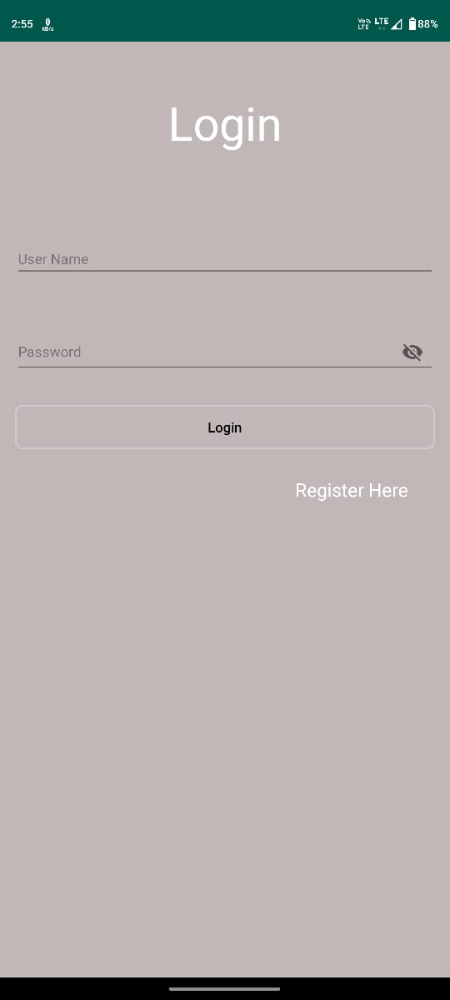
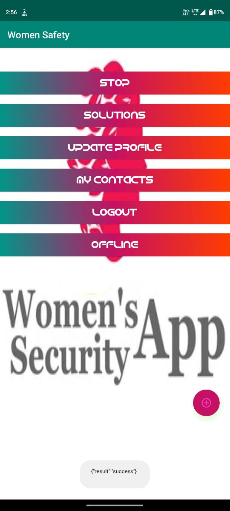
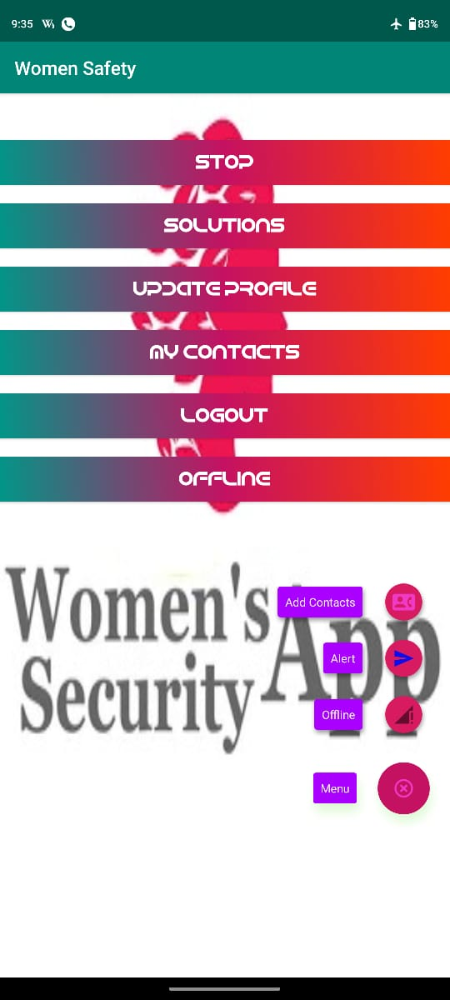
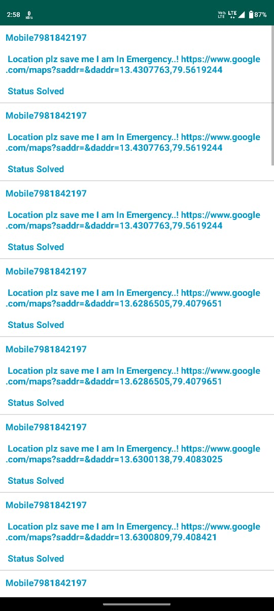

 Project Description
Project Description My project, a women's safety mobile application, serves as a vital tool in ensuring personal security. It empowers users to trigger an emergency alert via SMS or phone call with a single touch during critical situations. The primary goal is to swiftly transmit the user's precise GPS location to pre-defined contacts, updating it every 300 meters. Key features include Geo Fence for continuous location tracking, 'Shake to alert' for discreet activation, and the use of the power button as a distress signal. This project addresses the urgent need for enhanced safety measures, especially for women, leveraging the ubiquity of smartphones in today's society.
Technologies Used:•The project involves mobile app development for both Android and iOS platforms.
•Java and Kotlin (for Android).
•Utilizes GPS and location services to track the user's precise location.
•Integrates SMS and phone call functionalities to send alerts to pre-defined contacts.
•Implements geofencing technology for continuous location tracking and boundary alerts.
•Utilizes motion sensors to enable the 'Shake to alert' feature for discreet activation.
As a dedicated member of a 5-member team, I assumed a leadership role in our women's safety mobile application project. My primary responsibility involved coding the frontend and backend of the application, ensuring its seamless functionality. Beyond coding, I played a pivotal role in leading and facilitating effective communication among team members, addressing issues, and providing clear explanations when needed. My leadership and technical contributions were instrumental in realizing the project's goals, enhancing personal security through innovative smartphone technology.
•Empowers users to initiate an emergency alert with a single touch, ensuring swift action during critical situations.
•Transmits the user's exact GPS coordinates to pre-defined contacts, updating the location every 300 meters traveled.
•Enables continuous location tracking and boundary alerts, providing real-time information to contacts about the user's movements.
•Offers a discreet activation option, allowing users to trigger an emergency alert by shaking their device
•Provides an alternative method for sending out distress signals through the device's power button.
.Addresses the pressing need for improved safety measures, particularly for women, by leveraging the widespread use of smartphones in modern society.
As the lead developer responsible for both front-end and back-end aspects of our women's safety mobile application, I encountered several challenges. One significant hurdle was ensuring seamless communication between the app's various modules while maintaining a user-friendly interface. Coordinating a team of five members also presented communication and collaboration challenges. To address these issues, I implemented a well-structured development process, conducted regular team meetings to discuss progress and challenges, and provided clear documentation for seamless code integration. Additionally, I leveraged my coding skills to optimize the app's performance, ensuring efficient GPS tracking and alert triggering. Overall, these solutions enabled us to overcome obstacles and successfully deliver a robust safety solution for our users.
Our women's safety mobile application has yielded significant results and made a substantial impact. The project successfully combined frontend and backend development to create a seamless user experience. By taking a leadership role within the team, I ensured effective communication and issue resolution, contributing to our project's success. The application has had a positive impact on personal security, particularly for women. It has been well-received, with users appreciating its ease of use and effectiveness in critical situations. The app's features, such as 'Shake to alert' and the distress signal via the power button, have been particularly lauded for their discreetness and rapid response capabilities. Furthermore, the continuous location tracking provided by the Geo Fence feature has been instrumental in enhancing user safety. The project aligns with the pressing need for innovative safety measures in our society, and its success highlights the potential of leveraging smartphone technology for such critical purposes.
In our team project, I assumed a pivotal role in leading and coordinating the efforts of our five-member team. My responsibilities extended beyond coding, encompassing effective communication, issue resolution, and task delegation. This experience honed my leadership and teamwork skills, enabling seamless collaboration among team members. Overall, this project provided me with a holistic understanding of project management, technical implementation, and user-centric development. It emphasized the significance of technology in addressing real-world safety concerns, particularly for women, and underscored the importance of effective leadership in achieving project success.